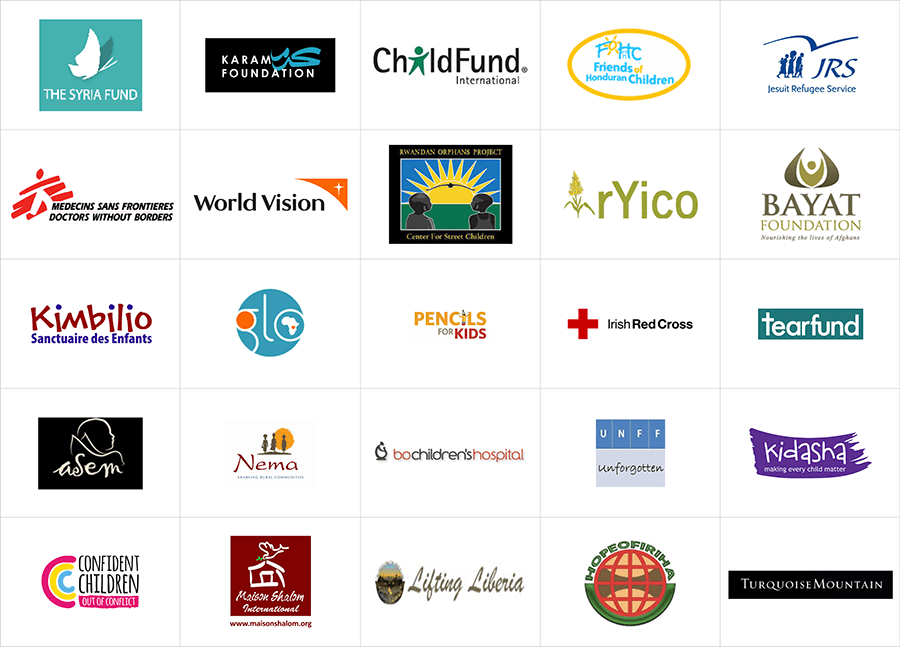
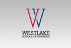

We believe our employees should enable more people share and reap the rewards of a growing economy. We strongly believe reducing inequality, eradicating poverty and helping refugees and as an organization we work hard towards achieving this.
We strongly believe reducing inequality, eradicating poverty and helping refugees and as an organization we work hard towards achieving this.
We believe our employees should enable more people to share and reap the rewards of a growing economy. We strongly believe in reducing inequality, eradicating poverty and helping refugees, and as an organization we work hard towards achieving this. We understand that our contribution might be just a drop in a vast ocean, but we believe that every good and generous act, however small or large, goes a long way when it comes to helping the less privileged. A substantial portion of the S&L shareholder dividends have been pledged to not-for-profit causes across the globe, focussed on Children and Education across Asia, Africa, Central America and the US. As an organization, we look at tapping our internal talent and resources to make investments and work with charities across three main themes: Children, their education, and Africa. Major investments have gone into helping child refugees from violent and war-stricken regions such as Syria, Honduras, Malawi and East Africa; we look at children as our world’s future, and believe in ensuring it is looked after. Our focus has been on the upliftment of children from some of the poorest parts of the world, helping them get proper food, shelter, protection and education. Key success stories include providing stable, continuous education for children from broken homes in India, food and shelter to civil war refugees in Africa, and education and livelihood to drug-war affected children in Central America. Over the last several years we have worked closely with the Bishop Aelen home for Children in Chennai, India, and have adopted over 25 girl children living and studying here from broken homes. We have also partnered with Shabnam Resources to change the living conditions of street children.

S&L believes helping adult refugees gain globally recognizable vocational degrees will make them more employable.
As part of its global corporate citizenship, Sett & Lucas has identified critical pockets of social responsibility and continued to invest in them. One key area of focus has been refugees. When people are forced to flee the place they call home, leaving everything behind, and start again in a new country, the effects can be devastating – families are torn apart and left without means of support, and quality of life, access to healthcare, education and welfare services are often almost impossible to reach, with the situation of child refugees in particular of concern. S&L believes helping adult refugees gain globally recognizable vocational degrees will make them more employable, ultimately helping their children access a better quality of life. To do this, the firm is creating a virtual business school to give refugees access to an accredited MBA programme. S&L has seed funded the Westlake School of Business, offering MBA programmes that are free for refugees, with a minimal fee structure for disadvantaged students from around the world. The school aims to match the best of business education, driven by a sophisticated artificial intelligence (AI) learning platform designed to accelerate learning, matching S&L’s values and vision by making MBA programs accessible to the learning community from around the globe.

Entrepreneurship is the cornerstone of the Sett & Lucas business, and we work closely with some of the best accelerators and incubators in the world.
Entrepreneurship is the cornerstone of the Sett & Lucas business. The fundamental goal of the fund management and investment banking businesses is to back entrepreneurial visions and channel them along the right path towards sustainability and growth. Entrepreneurship levels vary across countries due to factors including progressive government programs, support from family and friends, cultural factors, an investor-friendly environment, efficient financial markets and a more transparent corporate taxation system – our goal has been to guide entrepreneurs by educating them on the pros and cons of each of the potential global markets. With a fund management team that has driven transactions and facilitated investments across Asia, Africa, Europe, North and South America and Australia, S&L is well positioned to guide entrepreneurs into newer markets with better strategies. S&L works closely with some of the best accelerators and incubators in the world, having partnered with marquee names like Y Combinator and DreamIT Ventures, giving access to some of the brightest minds and most creative companies. S&L looks at companies that work towards the advancement of life and technology, be it organic foods or health related tech, with a focus on companies that target the consumer. In the past year S&L has partnered to invest in Y Combinator and DreamIT portfolio companies through its venture fund, Linus Ventures, and continues to mentor entrepreneurs across various industry segments, with a special focus on enterprise technology, consumer internet and business services. Y Combinator, a US seed accelerator started in March 2005, has been ranked one of the top Platinum Plus Tier US Accelerators and has invested in around 1,450 companies including Dropbox, Airbnb, Coinbase, Stripe, Reddit and Instacart, with a combined market capitalization of YC companies over $80 billion. DreamIT Ventures, founded in 2007 and headquartered in Philadelphia, operates four seed accelerators in the US as well as an international accelerator in Tel Aviv, and has launched over 200 companies that have raised $275 million at combined valuations of more than $1 billion, including notable investments like SeatGeek, SCVNGR and MindSnacks.
The investment banking team at Sett & Lucas to its credit has over 900 hours of mentoring students every year.
Sett & Lucas believes in investing in the future. Our future is determined by the work that we do, and the work that we do is achieved by the employees that we have – as an organisation we take great pride in developing our future teams. The executive team of Sett & Lucas has billions of dollars of transaction experience across several years of banking and corporate finance, and deal experience across multiple continents. The next generation of MBAs and finance graduates can immensely benefit from interacting with and being mentored by these senior bankers. The investment banking team at Sett & Lucas to its credit has over 900 hours of mentoring students every year, with several students studying in universities in the US, UK, Hong Kong, Australia and India benefiting from these mentoring sessions. The executive team has formal and informal mentoring relationships with students at universities across the globe, including a formal mentoring relationship with The Wharton School at the University of Pennsylvania – the world’s first collegiate school of business, established in 1881 – to provide mentoring to second year MBA students, with our senior partner helping guide them in their career paths. In addition to Wharton, our investment bankers work closely with students from several prestigious business schools and universities such as Yale, Harvard, Princeton and Cambridge. S&L also believes mentoring should not be limited to the Ivy League, and has in the past several years worked closely with students from several minority colleges in the US, including Paul Quinn, Howard University, Spelman College, Florida A&M University, Delaware State University, Jackson State University and Lincoln University. If you are a student currently enrolled in a university, specializing in management or corporate finance, and require mentoring from an investment banker, investment analyst or regulatory compliance specialist, and are living in a country where Sett & Lucas has an established office, feel free to email your details with a request to be mentored to r.paul@settlucas.com
The S&L philosophy of betterment of society is reflected not just in our own activities but also in the choices we make for our fund.
The S&L philosophy of bettering society is reflected not just in our own activities, but in the choices we make for our fund investments. We work to invest, mentor and partner with firms that have a social impact, with key areas of focus including life sciences and genetics research, improving communities impacted by drugs, child healthcare, healthy eating and organic food. These include DNAsimple, which is at the forefront of accelerating drug discovery in the life sciences space by paying donors for their DNA, building a database of samples so scientists can access the genetic material they need for research purposes. Hikae Steel has set up one of the first steel plants in Honduras, an important infrastructure project for a country that struggles to attract inward investment, creating jobs in an area of high unemployment – the plant is located in San Pedro Sula, once popularly referred to as the world’s most dangerous city to live in, with the lowest levels of employment and highest consumption of drugs in Honduras. Mii Baby was co-founded by a children’s environmental health advocate, initially to produce baby bottles, cups and teats free of Bisphenol A (BPA), an industrial chemical used in plastics production that is now banned in baby products in many developed world countries, with the patent-pending technology now being brought to the developing world. Supr is ensuring people in India get the freshest milk possible – almost 70% of milk in India is adulterated with water, detergent or worse, and by taking milk directly from the farm and delivering it to consumers, Supr is cutting out the middlemen who tamper with the product. Eat Origin is a San Francisco based company ensuring healthy eating habits are followed by the working population through organic smoothies and protein shakes that promote a healthy lifestyle, with a current focus on being the go-to drink for gym users and working with corporate customers to promote healthy living with onsite smoothie makers at offices.